library("vcd")Loading required package: gridlibrary("scatterplot3d")
library(colorspace)
## random seed
myseed <- 1071
set.seed(myseed)library("vcd")Loading required package: gridlibrary("scatterplot3d")
library(colorspace)
## random seed
myseed <- 1071
set.seed(myseed)data("Hospital")
data("Arthritis")
art <- xtabs(~ Treatment + Improved, data = Arthritis, subset = Sex == "Female")
names(dimnames(art))[2] <- "Improvement"data("UCBAdmissions")
names(dimnames(UCBAdmissions)) <- c("Admission", "Gender", "Department")data("Punishment")
punish <- xtabs(Freq ~ memory + attitude + age + education, data = Punishment)
dimnames(punish)[[3]][3] <- "40+"set.seed(myseed)
art_max <- coindep_test(art, n = 5000)
set.seed(myseed)
ucb_max <- coindep_test(aperm(UCBAdmissions, c(3,2,1)), margin = "Department", n = 5000)set.seed(myseed)
art_chisq <- coindep_test(art, n = 5000, indepfun = function(x) sum(x^2))set.seed(myseed)
hos_chisq <- coindep_test(Hospital, n = 5000, indepfun = function(x) sum(x^2))barplot(Hospital, legend = rownames(Hospital), beside = TRUE,
xlab = "Length of stay", ylab = "Number of patients")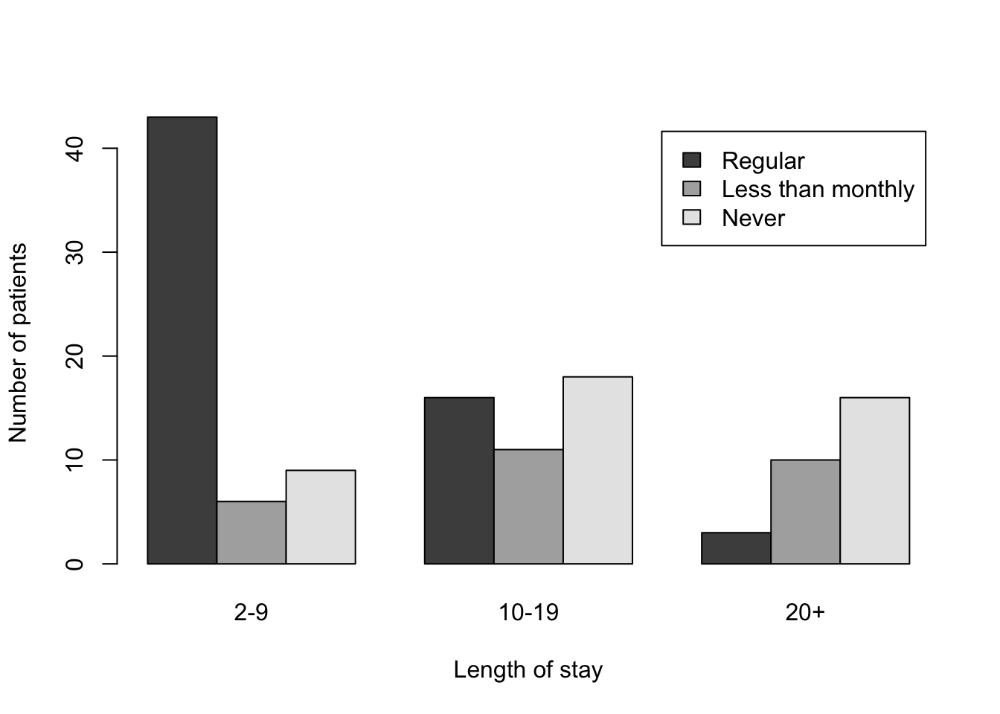
###################################################
### Figure 12.2: 3D bar chart for the hospital data
###################################################
myHospital = t(Hospital)[,3:1]
mydat = data.frame("Length of stay" = as.vector(row(myHospital)),
"Visit frequency" = as.vector(col(myHospital)),
"Number of patients" = as.vector(myHospital))
scatterplot3d(mydat, type = "h", pch = " ", lwd = 10,
x.ticklabs = c("2-9","","10-19","","20+"),
y.ticklabs = c("Never","","Less than monthly","","Regular"),
xlab = "Length of stay", ylab = "Visit frequency", zlab = "Number of patients",
y.margin.add = 0.2,
color = "black", box = FALSE)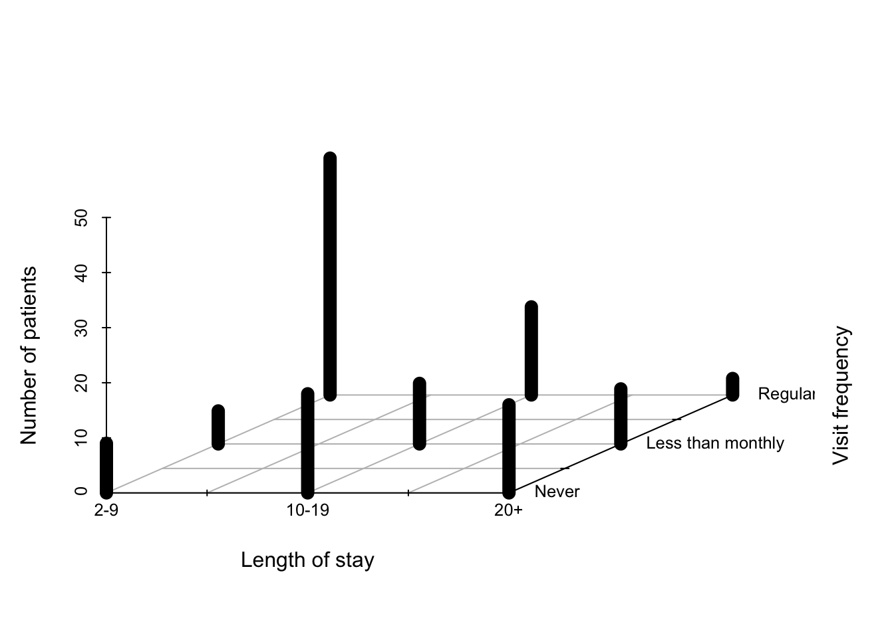
############################################################################
### Figure 12.3: Construction of a mosaic plot for the hospital data, step 1
############################################################################
mosaic(margin.table(Hospital, 2), split = TRUE)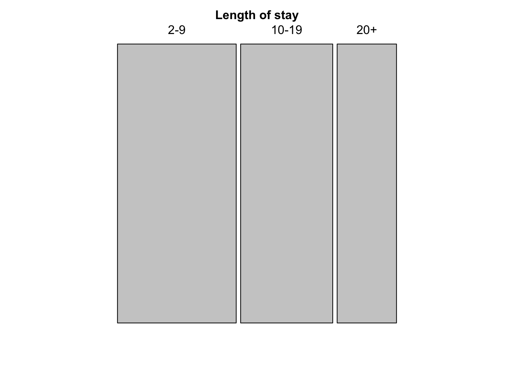
mosaic(t(Hospital), split = TRUE, mar = c(left = 3.5),
labeling_args = list(offset_labels = c(left = 0.5),
offset_varnames = c(left = 1, top = 0.5), set_labels =
list("Visit frequency" = c("Regular","Less than\nmonthly","Never"))))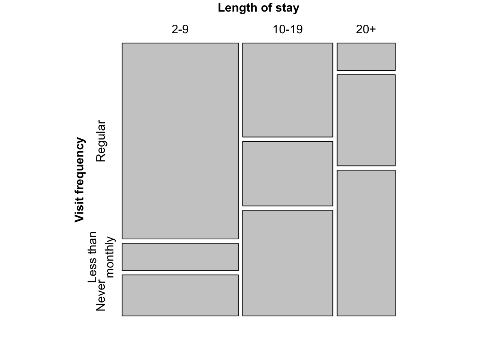
###
### Figure 12.5: Mosaic plot for the Hospital data, alternative splitting
mosaic(Hospital)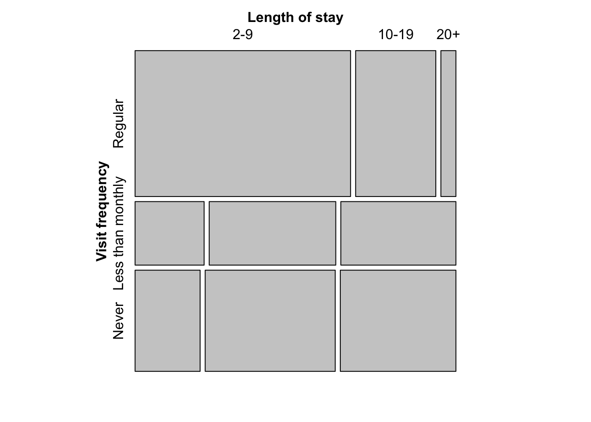
sieve(t(Hospital), split = TRUE, pop = FALSE, gp = gpar(lty = "dotted", col = "black"))
labeling_cells(text = t(Hospital), clip = FALSE, gp = gpar(fontface = 2, fontsize = 15))(t(Hospital))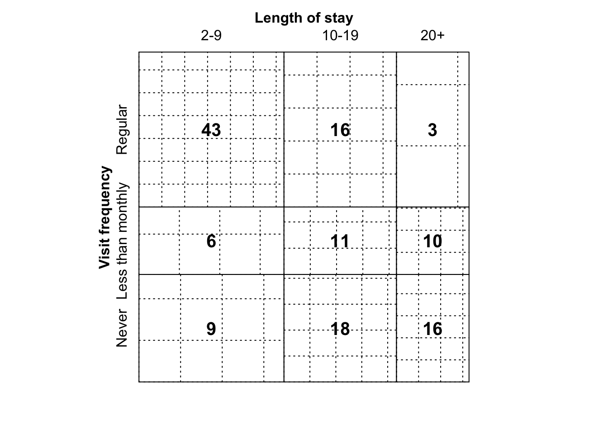
assoc(t(Hospital), split = TRUE)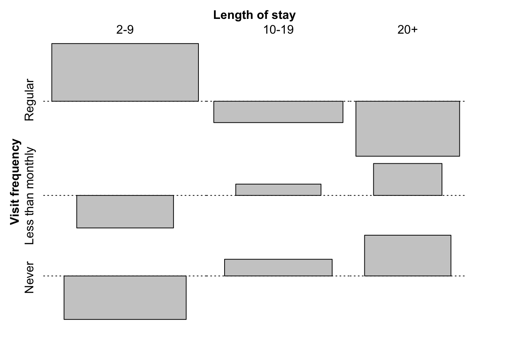
par(mfrow = c(1,2), mar = c(1,1,1,1), oma = c(0,0,0,0))
pie(rep(1,9), radius = 1, col = rainbow(9), labels = 360 * 0:8/9)
pie(rep(1,9), radius = 1, col = rainbow_hcl(9), labels = 360 * 0:8/9)
par(mfrow = c(1,1), mar = c(1,1,1,1), oma = c(0,0,0,0))
plot.new()
rect(0:4/5, 0.2, 1:5/5, 0.5, border = 0, col = diverge_hcl(5))
rect(0, 0.2, 1, 0.5, border = 1, col = NULL)
rect(0:4/5, 0.55, 1:5/5, 0.85, border = 0, col = diverge_hsv(5))
rect(0, 0.55, 1, 0.85, border = 1, col = NULL)
text(c(1:5/5 - 0.1), 0.11, c("(260, 100, 50)", "(260, 50, 70)", "(H, 0, 90)", "(0, 50, 70)", "(0, 100, 50)"))
text(c(1:5/5 - 0.1), 0.91, c("(240, 100, 100)", "(240, 50, 100)", "(H, 0, 100)", "(0, 50, 100)","(0, 100, 100)"))
mycol <- rep(grey.colors(2)[2:1], 1:2)
mosaic(t(Hospital),
mar = c(left = 3.5),
labeling_args = list(offset_labels = c(left = 0.5),
offset_varnames = c(left = 1, top = 0.5), set_labels =
list("Visit frequency" = c("Regular","Less than\nmonthly","Never"))),
split = TRUE, highlighting = 2, gp = gpar(fill = mycol, col = mycol))
### color coding of the residuals
mosaic(t(Hospital), split = TRUE, shade = TRUE,
mar = c(left = 3.5),
gp_args = list(p.value = hos_chisq$p.value),
labeling_args = list(offset_labels = c(left = 0.5),
offset_varnames = c(left = 1, top = 0.5), set_labels =
list("Visit frequency" = c("Regular","Less than\nmonthly","Never"))))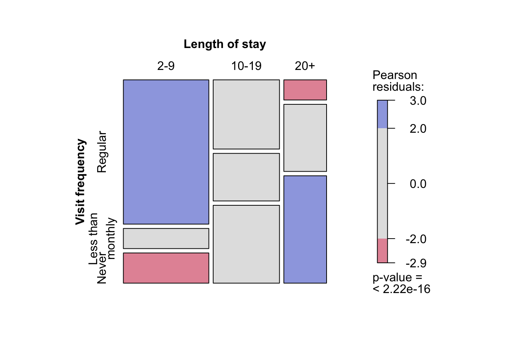
### Friendly-like color coding of the residuals
##########################################################################
assoc(t(Hospital), split = TRUE, shade = TRUE, keep = TRUE,
gp_args = list(p.value = hos_chisq$p.value))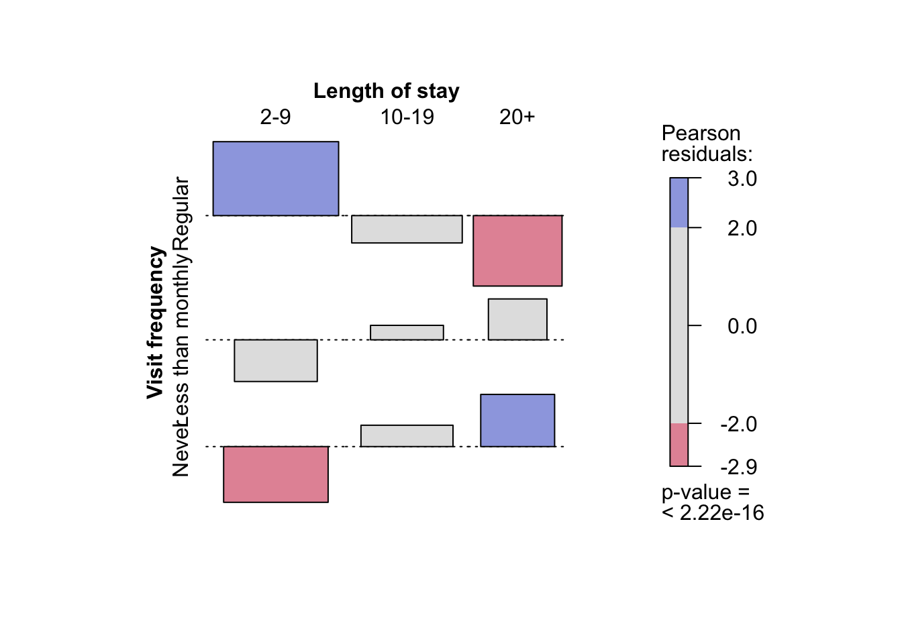
###########################################################################
mosaic(art, shade = TRUE, gp_args = list(p.value = art_chisq$p.value))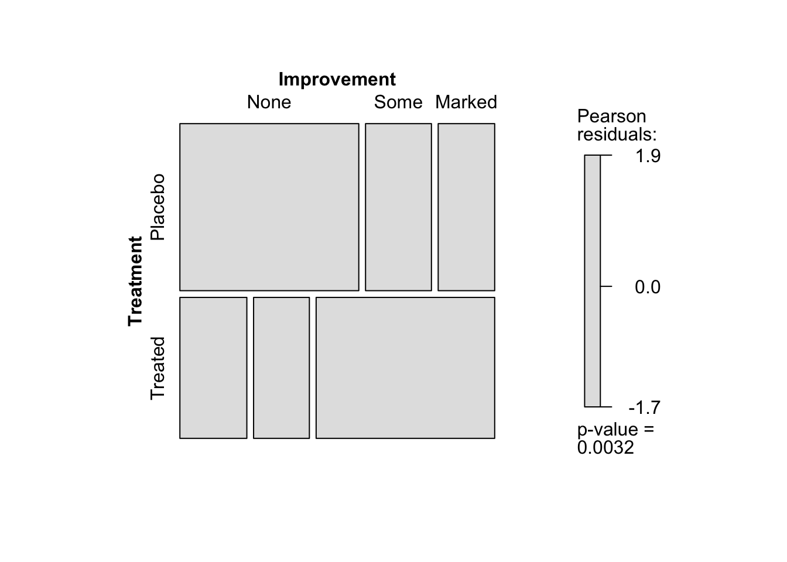
set.seed(myseed)
mosaic(art, gp = shading_max, gp_args = list(n = 5000))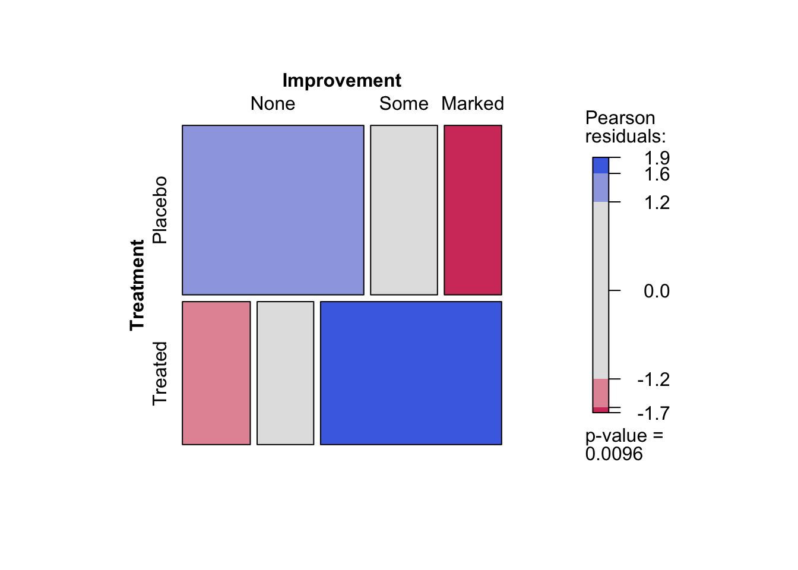
pairs(UCBAdmissions)
doubledecker(aperm(aperm(UCBAdmissions, c(1,3,2))[2:1,,], c(2,3,1)),
margins = c(left = 0, right = 5), col = rev(grey.colors(2)))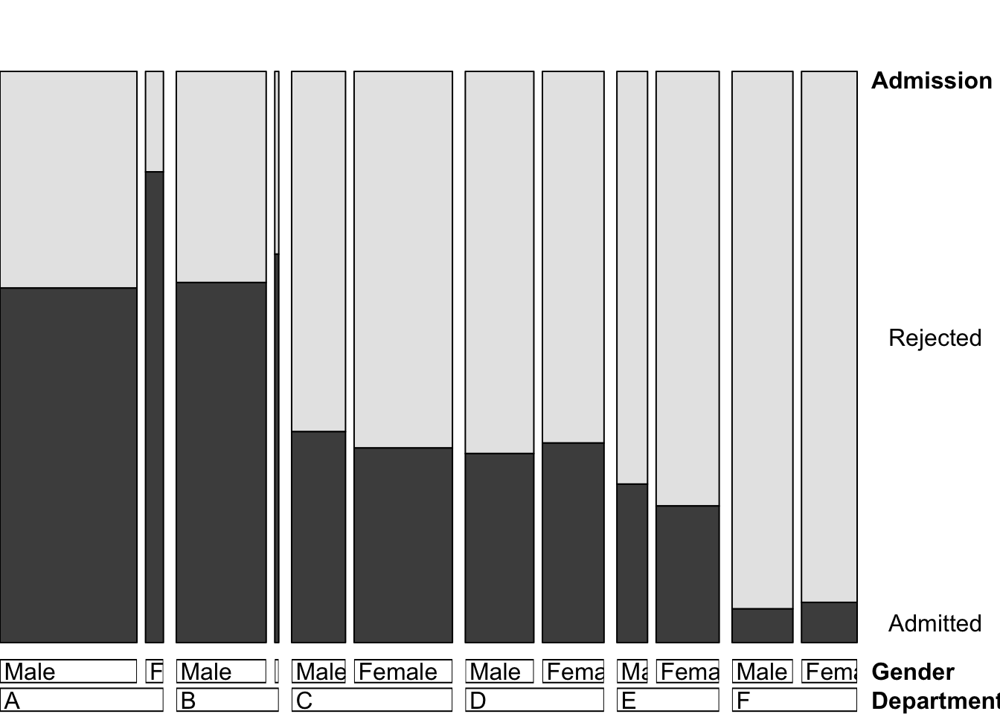
mosaic(aperm(UCBAdmissions, c(3,2,1)), data = UCBAdmissions, split = TRUE,
shade = TRUE, keep = FALSE, residuals = ucb_max$residuals,
gp_args = list(p.value = ucb_max$p.value), rep = c(Admission = FALSE))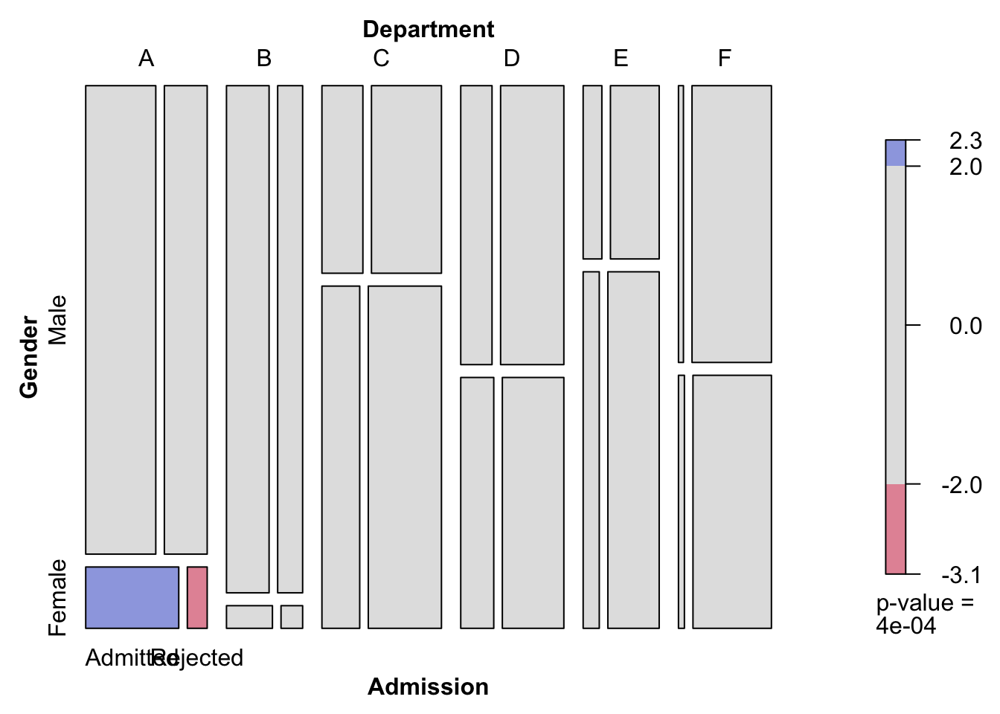
assoc(aperm(UCBAdmissions, c(3,2,1)), split = c(TRUE,FALSE,TRUE), shade = TRUE,
residuals_type = "Pearson", residuals = ucb_max$residuals,
gp_args = list(p.value = ucb_max$p.value), rep = c(Admission = FALSE))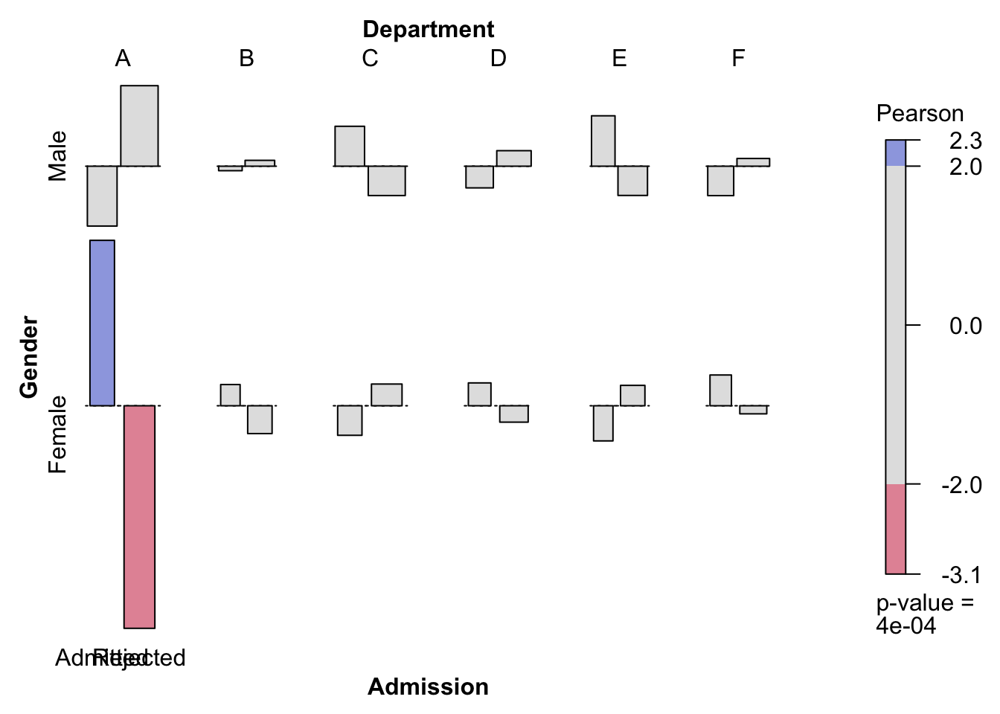
cotabplot(aperm(UCBAdmissions, c(2,1,3)), panel = cotab_coindep, shade = TRUE,
legend = FALSE,
panel_args = list(type = "assoc", margins = c(2,1,1,2), varnames = FALSE))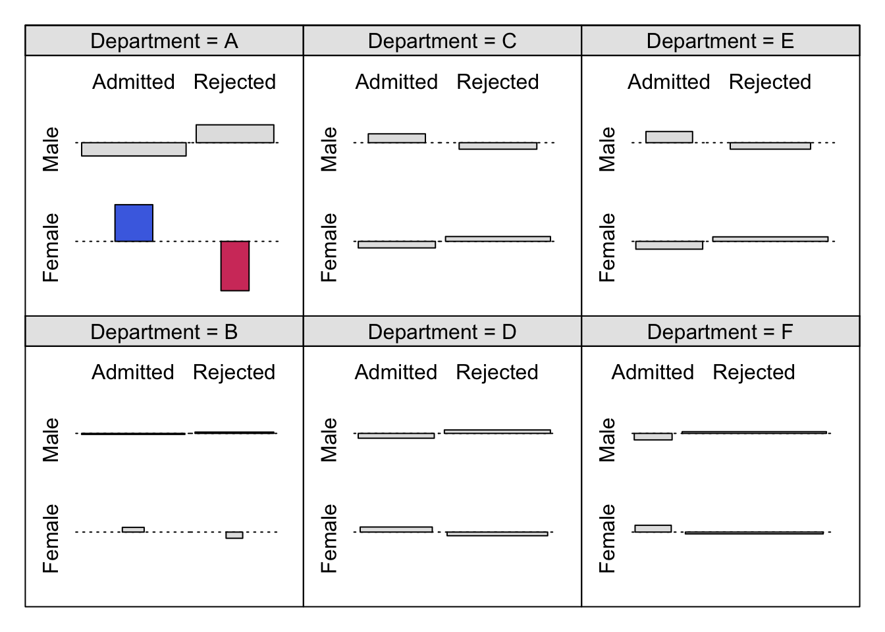
### Figure 12.20: Mosic plot with highlighting for the punishment datamosaic(~ age + education + memory + attitude, data = punish, keep = FALSE,
gp = gpar(fill = grey.colors(2)), spacing = spacing_highlighting,
rep = c(attitude = FALSE))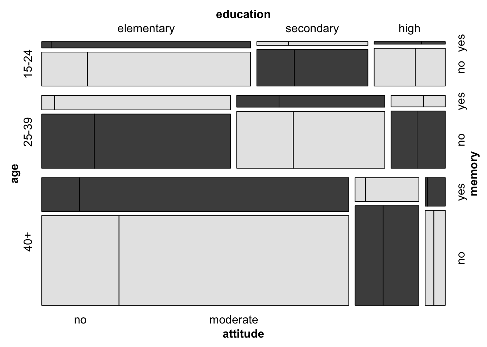
set.seed(123)
cotabplot(punish, panel = cotab_coindep, panel_args = list(varnames = FALSE, margins = c(2, 1, 1, 2)))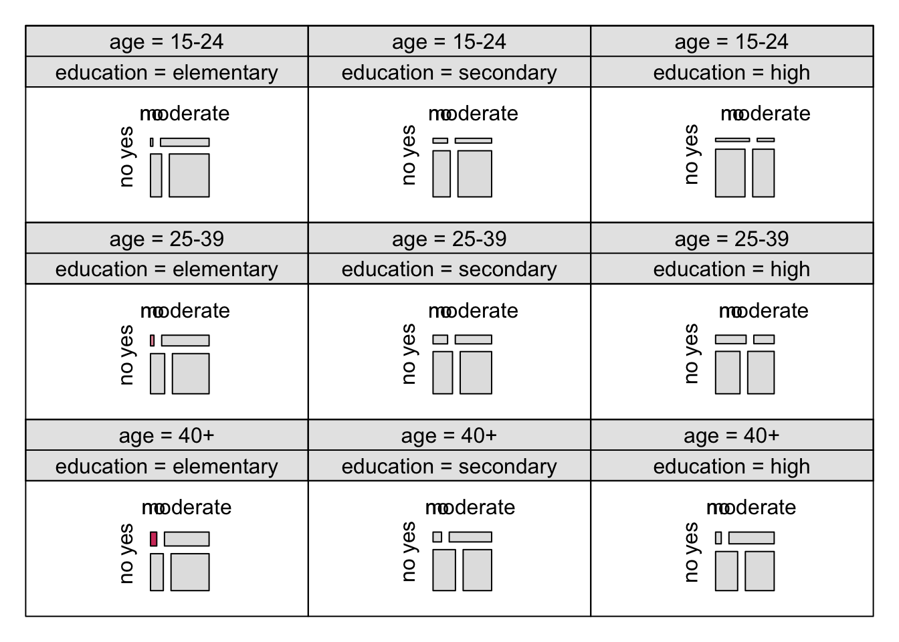